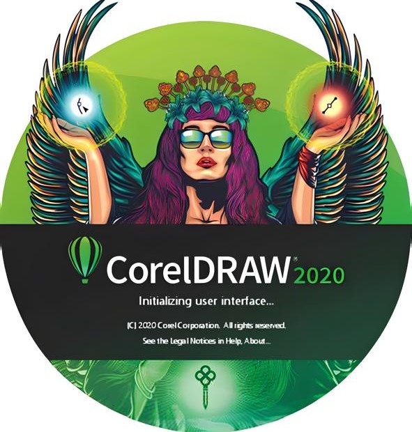
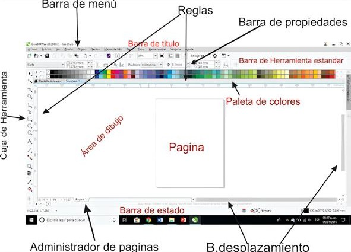

¿Qué son las Producciones Digitales?
Las producciones digitales consisten en la creación de contenido visual utilizando herramientas informáticas como software de diseño gráfico, edición de imagen, video o audio. Se utilizan en publicidad, redes sociales, impresión y más.
Habilidades que se desarrollan en Producciones Digitales
- Creatividad visual y pensamiento artístico.
- Manejo de herramientas de diseño gráfico y edición.
- Capacidad para planificar y estructurar contenido multimedia.
- Precisión y atención al detalle.
- Trabajo colaborativo en proyectos visuales.
Aplicaciones en la vida real
Las habilidades adquiridas en Producciones Digitales pueden aplicarse en diferentes áreas profesionales:
- Diseño de publicaciones para redes sociales.
- Creación de contenido para emprendimientos o negocios propios.
- Elaboración de presentaciones visuales para proyectos educativos.
- Edición de portafolios digitales o currículos creativos.
- Freelancing en diseño gráfico o edición de video.
Otros programas útiles en Producciones Digitales
- Canva: Ideal para diseñar rápidamente presentaciones, afiches o redes sociales sin conocimientos técnicos.
- Photopea: Editor de imágenes gratuito en línea, similar a Photoshop.
- Audacity: Para editar y grabar audio de forma profesional.
- Inkscape: Alternativa gratuita a CorelDRAW para diseño vectorial.
Comparación de Herramientas de Diseño
| Software |
Tipo |
Dificultad |
Uso principal |
Licencia |
| CorelDRAW |
Vectorial |
Media |
Diseño gráfico profesional |
Comercial |
| Canva |
Plantillas |
Fácil |
Redes sociales y presentaciones |
Gratuita / Premium |
| Inkscape |
Vectorial |
Media |
Diseño técnico / artístico |
Gratis |
| Photoshop |
Raster |
Avanzada |
Retoque y edición de imagen |
Comercial |
Comparación de Editores de Video
| Editor |
Dificultad |
Plataforma |
Ideal para |
Precio |
| Filmora9 |
Fácil |
Windows/Mac |
Estudiantes y principiantes |
Pago único |
| CapCut |
Muy fácil |
Web/Móvil |
Videos para redes sociales |
Gratis |
| Adobe Premiere Pro |
Avanzada |
Windows/Mac |
Producción profesional |
Suscripción mensual |
CorelDRAW: Herramienta Principal
CorelDRAW es un programa de diseño gráfico vectorial que permite crear logotipos, carteles, folletos, tarjetas, etiquetas y otros materiales visuales con gran precisión y calidad profesional.

- Diseño basado en vectores (escala sin perder calidad)
- Herramientas para ilustración, tipografía y maquetación
- Compatible con impresión y medios digitales
Proyectos Comunes
Algunos de los trabajos que se pueden desarrollar en esta clase son:
| Proyecto | Software | Formato Final |
|---|
| Diseño de Logotipos | CorelDRAW | PNG, PDF |
| Afiches Publicitarios | CorelDRAW | JPG, PDF |
| Tarjetas de Presentación | CorelDRAW | PDF |
Ventajas del Diseño Vectorial
A diferencia de los mapas de bits (como las fotos), los gráficos vectoriales permiten:
- Redimensionar sin perder calidad
- Editar formas, colores y textos fácilmente
- Exportar a formatos listos para impresión
Ejemplo de Interfaz
Así se ve la interfaz de CorelDRAW:

Filmora9 - Editor de Video
Filmora9 es un software de edición de video potente y fácil de usar, ideal para estudiantes, creadores de contenido y aficionados al video.
Características principales
- Interfaz intuitiva para usuarios principiantes y avanzados.
- Múltiples pistas de video y audio para mayor flexibilidad.
- Más de 200 efectos, filtros y transiciones.
- Función de pantalla verde (Chroma Key).
- Edición de audio con control de volumen y ecualizador.
- Corrección de color y herramientas de estabilización de imagen.
¿Para qué se puede usar?
Filmora9 es ideal para proyectos escolares, presentaciones, videos para YouTube, redes sociales, cortometrajes, y más. Su facilidad de uso lo hace perfecto para quienes están iniciando en el mundo de la edición audiovisual.
Requisitos del sistema
- Sistema operativo: Windows 7/8/10 (64-bit) o macOS.
- Procesador: Intel i3 o superior.
- Memoria RAM: Mínimo 4 GB (8 GB recomendado).
- Espacio en disco: Al menos 10 GB libres.
- Resolución de pantalla: 1366x768 o superior.
Ventajas para estudiantes
- Fácil de aprender y usar.
- Permite presentar proyectos de forma creativa.
- Desarrolla habilidades audiovisuales.
- Acercamiento al uso de herramientas profesionales.
Conclusión
Producciones Digitales con CorelDRAW permite a los estudiantes desarrollar habilidades gráficas esenciales para el mundo laboral moderno, especialmente en áreas como marketing, diseño y comunicación visual.